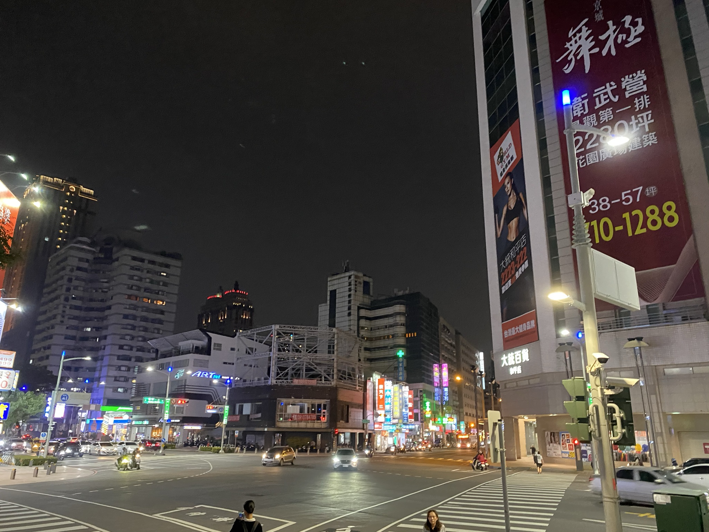
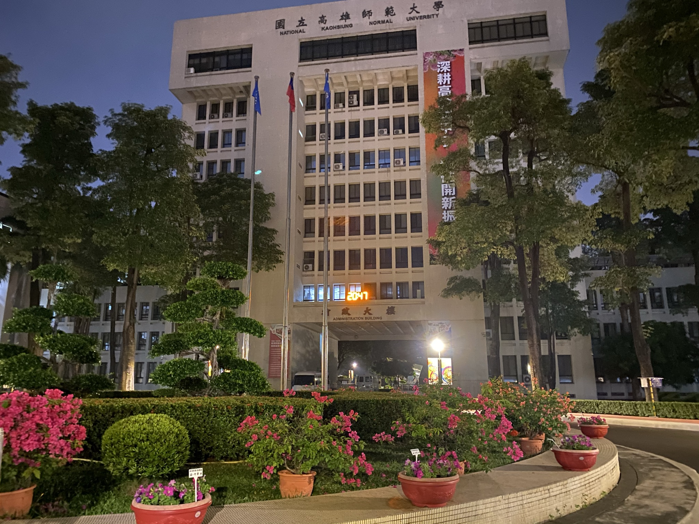
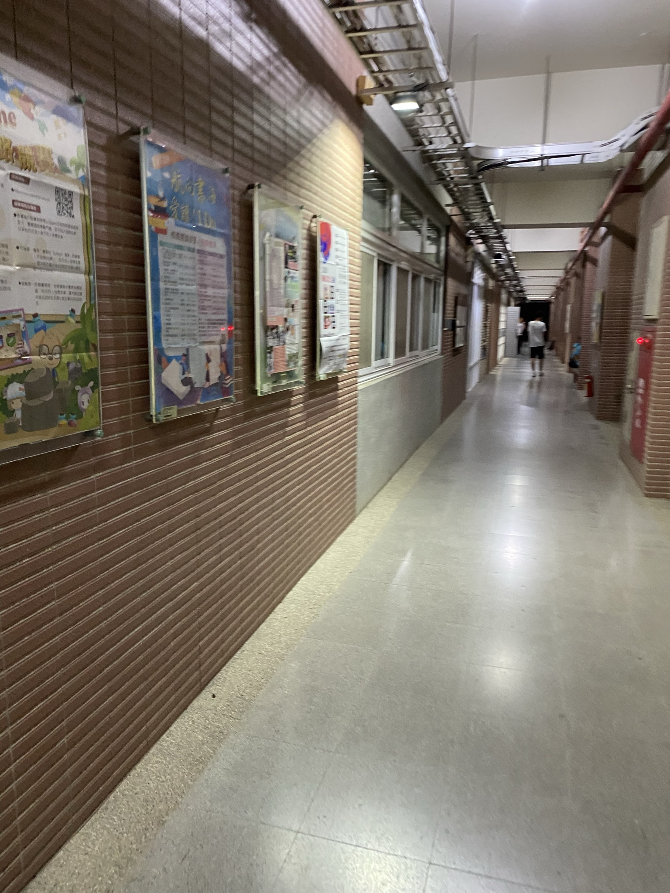
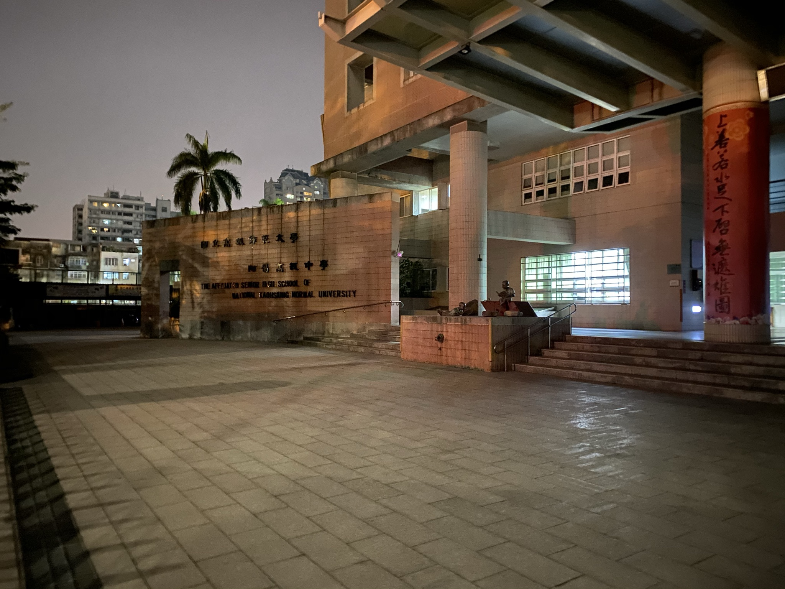
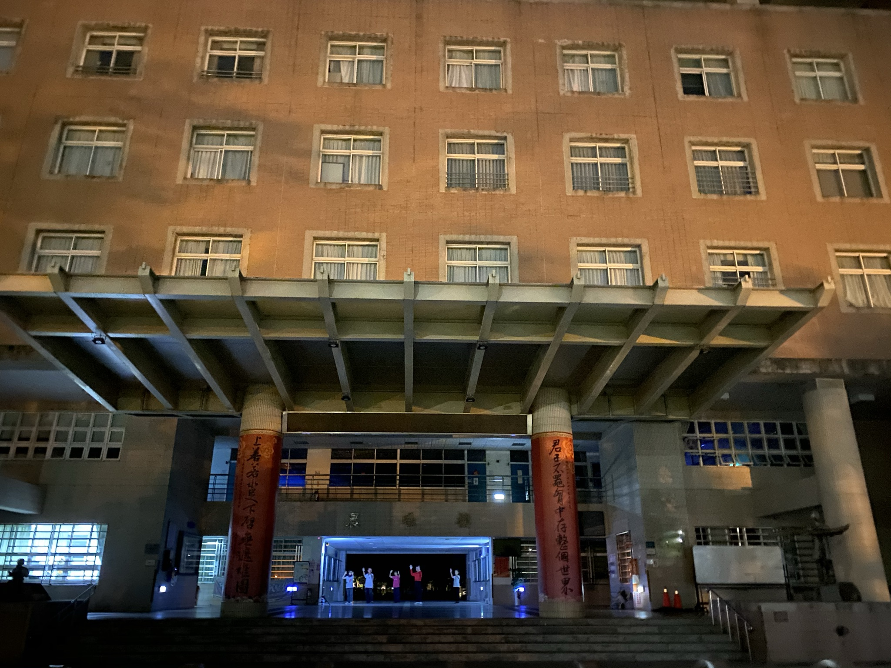
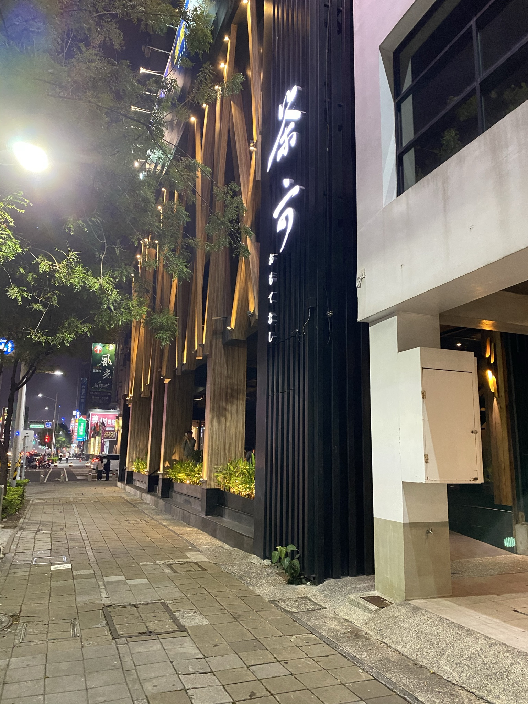
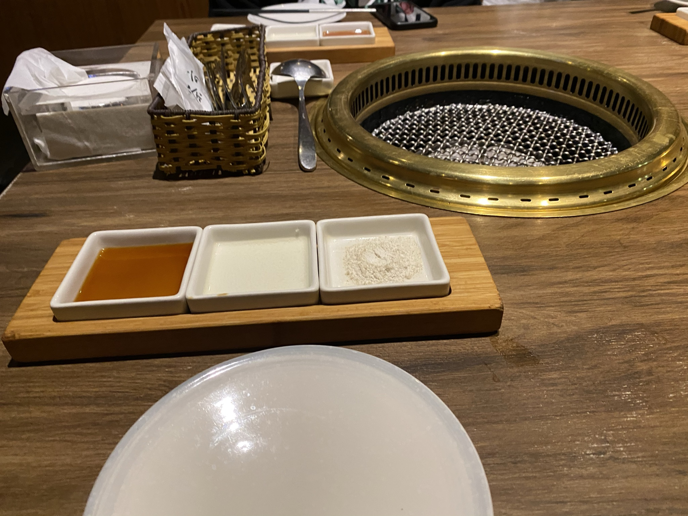
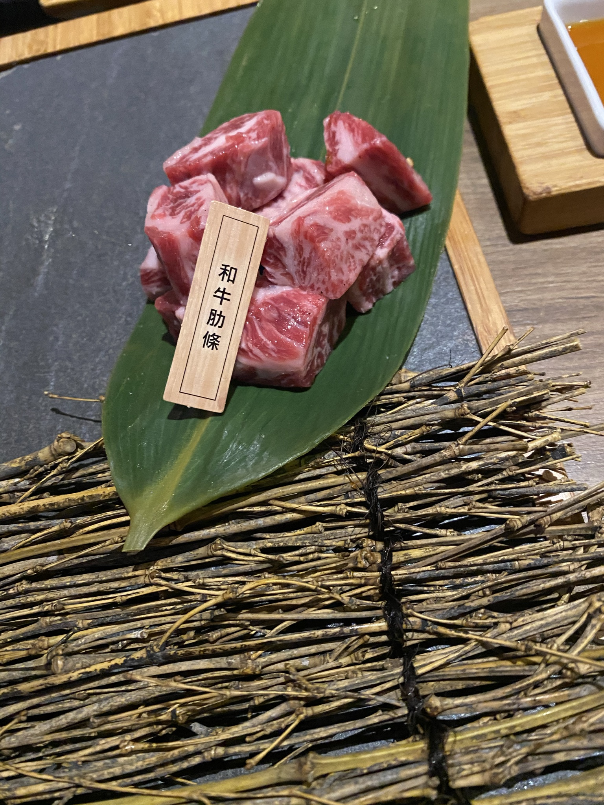
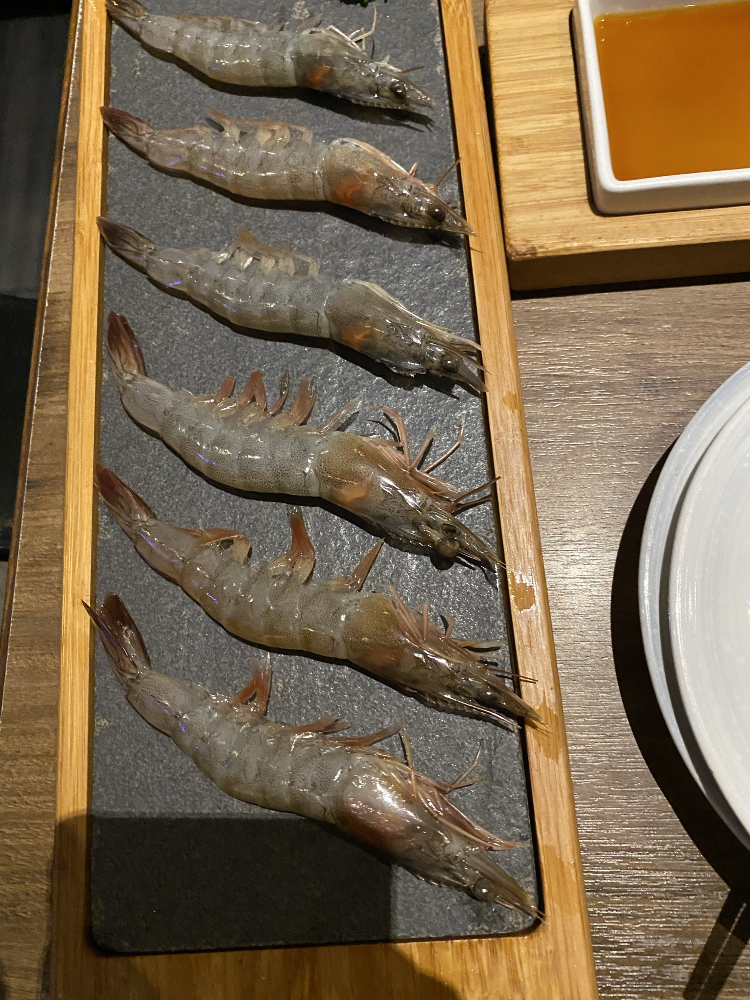
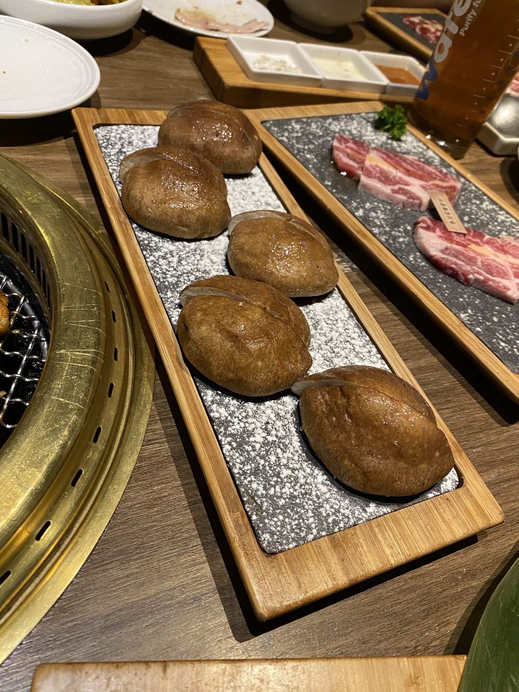

[生活文]期中考後回老家！
Day 1
終於從期中考解脫了，也是時候該回老家高雄一趟了。
從北車搭高鐵在左營車站下車後約晚上七點半，就決定跑到母校高師大附中晃一晃。
首先坐捷運到文化中心站下車，不得不說高捷的信用卡優惠是真的很棒，常常搭的話會省下不少錢，行動支付的部份也很方便，希望北捷也能夠引進，然後我在高雄其實不太常搭捷運，回來搭才感覺到高捷的車廂比較窄(可能是我的錯覺吧XD)。
從捷運出來之後感覺周遭環境沒啥變動，在路上一樣看得到熟悉的大碗公冰和有免費湯的便當店，這些都是高中時偶爾會去的地方。
進高師大校門之後看到高師大圖書館，以前會請假去裡面讀書，甚至會讀到閉館才去覓食，還有我永遠都不會忘記這間圖書館會在快閉館的時候用超吵超大聲的流行音樂來趕人(真的有夠吵==)。
走到高中部格局也都沒啥變，熟悉的腳踏車棚，熟悉的自習室，熟悉的處室，可惜我今天太晚到了，沒辦法去吃高師大男餐，主菜15，配菜一樣5元，價格及口味都屌打師大分部的學餐(免費湯也是高雄比較好喝)，當然旁邊的滷味也是便宜又好吃，還有台師大怎沒有飲料舖r，高師大男餐都會有阿姨幫你調飲料，也都是很便宜得價格，我以為這是必備的，果然離開了才會開始懷念舊有的環境QQ。
全部看完後來補幾張照片(拍得很丑XD):





Day 2
今天早上起床之後做了大學入門的報告，中午跟晚上在看資結的東西，直到晚上九點半的光棍聚餐。
地點跟去年一樣是高雄左營區的茶六，算一間定間偏高的燒烤餐廳，主打的是高級肉品。

用餐環境很好(廢話價格高XD)，沾醬有鹽巴還有檸檬汁還有一個我沒用我不知道是啥。
他們的菜單只有單點跟雙人還有三人，由於今天訂的時間太晚了，大部分人好像都有先吃過飯再來，所以就隨便點了幾樣單點。

首先到的是和牛肋條(358元)，大小數量都算少，不過不影響它得味道，吃的出跟一般肋條的差別，肉非常好咬，而且爆出來的油是偏甜的。
把價格味道考量進去的話是7分。

再來是甜蝦(99元)，以99元來說數量算中等，除了他的蝦腦不會很腥之外我吃不太出跟一般蝦子的差別，綜合評分6分。

最後是杏鮑菇(90元)，數量偏少，不過很大顆很好吃，綜合評分6.5分。

其實還有一個烤飯糰(50元)不過我忘記拍了，大小份量以說完全不夠，更何況裡面只有肉鬆，綜合評分5分。
結束後大家大合照後晃一晃就散會了。
Day 3
今天沒幹嘛，坐了七個小時的車後就回台北了。